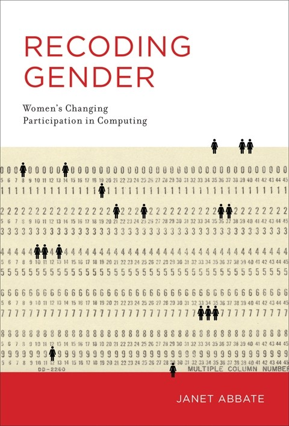

Recoding Gender (History of Computing)
by Janet Abbate
I have a very complex relationship with the profession of “software engineering” and how it’s often defined in a non-inclusive way and as the profession of the golden children of society. Part of that is that I had always known a bit about the origins of programming and that a majority of programmers used to be women. But I didn’t know a lot about it which is why I was excited to read this book. And it was great! The book walks you through the beginnings before and during WWII and what programming meant back then. It discusses how the emerging industry in this field changed job prospects and economic chances for women. But it also discusses how the image of a programmer changed as more and more men participated. It’s full of historical facts and documents and a more than wonderful read. It sparked a lot of thoughts for me and changed the way I think about my profession even more.
the traits that managers found most problematic in programmers were those stereotypically associated with men